Citrix Hypervisor: NetApp HCI for Citrix Virtual Apps
Contributors
 Download PDF of this topic
Download PDF of this topic
Citrix Hypervisor (formerly known as XenServer) is the industry-leading, cost-effective, open-source platform for desktop virtualization infrastructure. XenCenter is a light-weight graphical management interface for Citrix Hypervisor servers. The following figure presents an overview of the Citrix Hypervisor architecture.
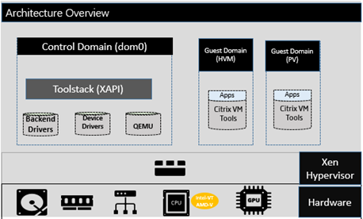
Citrix Hypervisor is a type-1 hypervisor. The control domain (also called Domain 0 or dom0) is a secure, privileged Linux VM that runs the Citrix Hypervisor management tool stack known as XAPI. This Linux VM is based on a CentOS 7.5 distribution. Besides providing Citrix Hypervisor management functions, dom0 also runs the physical device drivers for networking, storage, and so on. The control domain can talk to the hypervisor to instruct it to start or stop guest VMs.
Virtual desktops run in the guest domain, sometimes referred as the user domain or domU, and request resources from the control domain. Hardware-assisted virtualization uses CPU virtualization extensions like Intel VT. The OS kernel doesn’t need to be aware that it is running on a virtual machine. Quick Emulator (QEMU) is used for virtualizing the BIOS, the IDE, the graphic adapter, USB, the network adapter, and so on. With paravirtualization (PV), the OS kernel and device drivers are optimized to boost performance in the virtual machine. The following figure presents multitenancy features of Citrix Hypervisor.
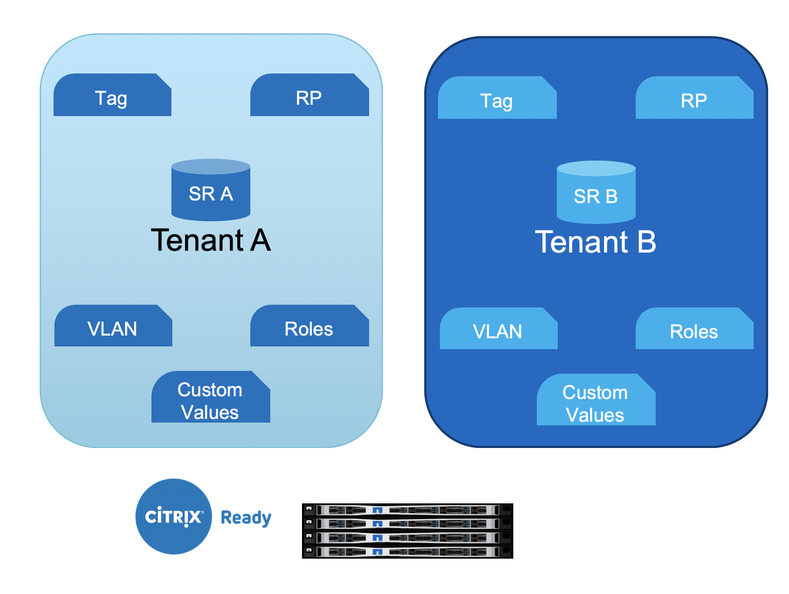
Resources from NetApp HCI makes up the hardware layer, which includes compute, storage, network, GPUs, and so on.
Compute
The CPU and memory details of NetApp HCI are covered in the previous section. However, this section focuses on how the compute node is utilized in the Citrix Hypervisor environment.
Each NetApp HCI compute node with Citrix Hypervisor installed is referred as a server. A pool of servers is managed as a resource pool (RP). The resource pools are created with similar model compute nodes to provide similar performance when the workload is moved from one node to another. A resource pool always contains a node designated as master, which exposes the management interface (for XenCenter and the CLI) and which can be routed to other member servers as necessary. When high availability is enabled, master re-election takes place if the master node goes down.
A resource pool can have up to 64 servers (soft limit). However, when clustering is enabled with the GFS2 shared storage resource, the number of servers is restricted to 16.
The resource pool picks a server for hosting the workload and can be migrated to other server using the Live Migration feature. To load balance across the resource pool, the optional WLB management pack must be installed on Citrix Hypervisor.
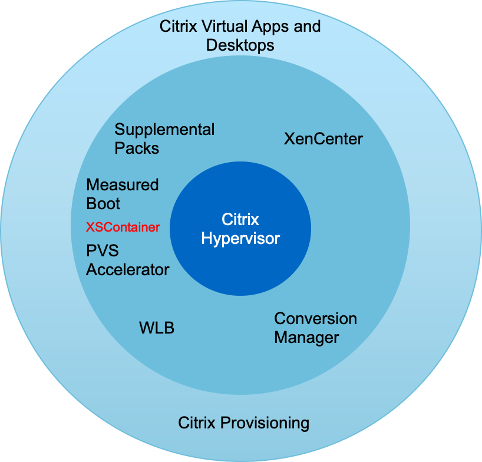
Each tenant resource can be hosted on dedicated resource pools or can be differentiated with tags on the same resource pool. Custom values can be defined for operational and reporting purpose.
Storage
NetApp HCI compute nodes have local storage that is not recommended for the storage of any persistent data. Such data should be stored on an iSCSI volume created with NetApp HCI storage or can be on NFS datastore on NetApp AFF.
To use NetApp HCI storage, iSCSI must be enabled on Citrix Hypervisor servers. Using the iQN, register the initiators and create access groups on the Element management portal. Create the volumes (remember to enable 512e block size support for LVM over iSCSI SR) and assign the account ID and access group.
| The iSCSI initiator can be customized using the following command on the CLI: |
xe host-param-set uuid=valid_host_id other-config:iscsi_iqn=new_initiator_iqn
Multipathing of iSCSI is supported when multiple iSCSI NICs are configured. iSCSI configuration is performed using XenCenter or by using CLI commands like iscsiadm and multipath. This configuration can also be performed with the various Citrix Hypervisor CLI tools. For iSCSI multipath for single target storage arrays, see CTX138429.
A storage repository (SR) is the storage target in which virtual machine (VM) virtual disk images (VDIs) are stored. A VDI is a storage abstraction that represents a virtual hard disk drive (HDD). The following figure depicts various Citrix Hypervisor storage objects.
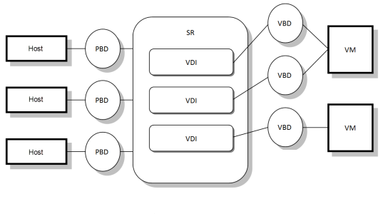
The relationship between the SR and host is handled by a physical block device (PBD), which stores the configuration information required to connect and interact with the given storage target. Similarly, a virtual block device (VBD) maintains the mapping between VDIs and a VM. Apart from that, a VBD is also used for fine tuning the quality of service (QoS) and statistics for a given VDI. The following screenshot presents Citrix Hypervisor storage repository types.
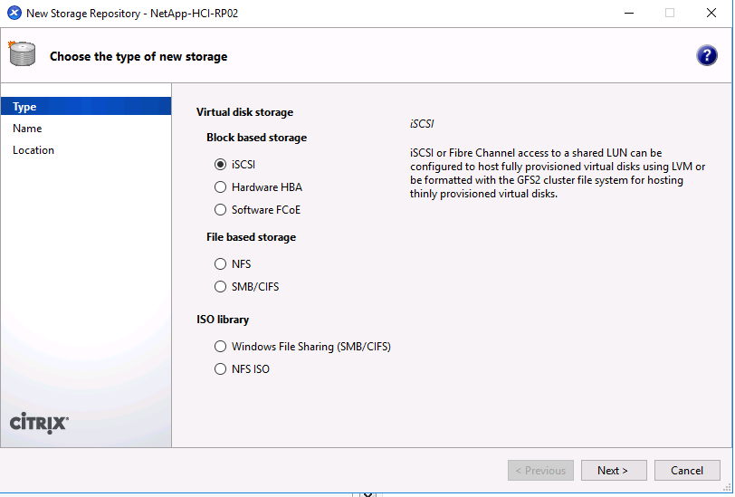
With NetApp HCI, the following SR types can be created. The following table provides a comparison of features.
| Feature | LVM over iSCSI | GFS2 |
|---|---|---|
Maximum virtual disk image size |
2TiB |
16TiB |
Disk provisioning method |
Thick Provisioned |
Thin Provisioned |
Read-caching support |
No |
Yes |
Clustered pool support |
No |
Yes |
Known constraints |
|
|
With the current features available in NetApp HCI, the Intellicache feature of Citrix Hypervisor is not of value to NetApp HCI customers. Intellicache improves performance for file-based storage systems by caching data in a local storage repository.
Read caching allows you to improve performance for certain storage repositories by caching data in server memory. GFS2 is the first iSCSI volume to support read caching.
Network
Citrix Hypervisor networking is based on Open vSwitch with support for OpenFlow. It supports fine grain security policies to control the traffic sent and receive from a VM. It also provides detailed visibility about the behavior and performance of all traffic sent in the virtual network environment. The following figure presents an overview of Citrix Hypervisor networking.
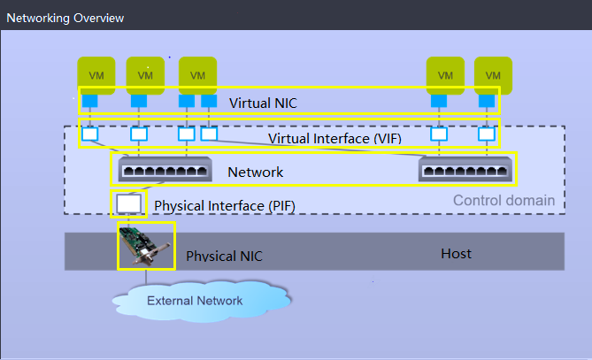
The physical interface (PIF) is associated with a NIC on the server. With Network HCI, up to six NICs are available for use. With the model, which only has two NICs, SR-IOV can be used to add more PIFs. The PIF acts as an uplink port to the virtual switch network. The virtual interface (VIF) connects to a NIC on virtual machines.
Various network options are available:
-
An external network with VLANs
-
A single server private network with no external connectivity
-
Bonded network (active/active – aggregate throughput)
-
Bonded network (active/passive – fault tolerant)
-
Bonded network (LACP – load balancing based on source and destination IP and port)
-
Bonded network (LACP – load balancing based on source and destination mac address)
-
Cross-server private network in which the network does not leave the resource pool
-
SR-IOV
The network configuration created on the master server is replicated to other member servers. Therefore, when a new server is added to the resource pool, its network configuration is replicated from the master.
| You can only assign one IP address per VLAN per NIC. For iSCSI multipath, you must have multiple PIFs to assign an IP on the same subnet. For H615C, you can consider SR-IOV for iSCSI. |
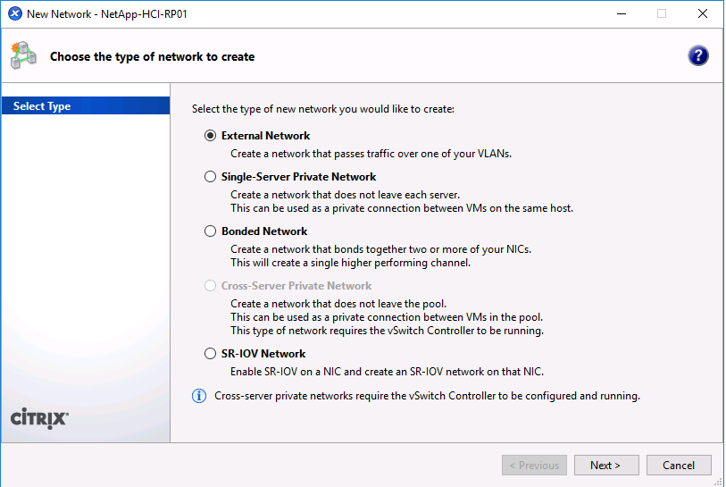
Because the network on Citrix Hypervisor is based on Open vSwitch, you can manage it with ovs-vsctl and ovs-appctl commands. It also supports NVGRE/VXLAN as an overlay solution for large scale- out environments.
When used with Citrix Provisioning (PVS), PVS Accelerator improves performance by caching Domain 0 memory or by combining memory and a local storage repository.
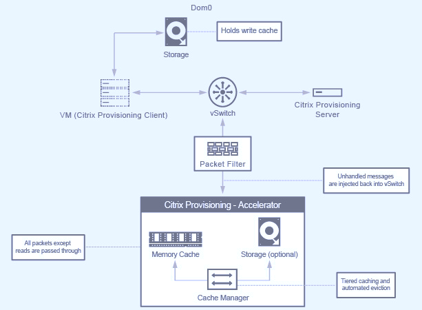
GPU
Citrix Hypervisor was the first to deploy NVIDIA vGPUs, a virtualization platform for GPUs, enabling the sharing of GPU across multiple virtual machines. NetApp HCI H610C (with NVIDIA Tesla M10 cards) and H615C (with NVIDIA Tesla T4 cards) can provide GPU resources to virtual desktops, providing hardware acceleration to enhance the user experience.
A NetApp HCI GPU can be consumed in a Citrix Hypervisor environment by using pass- through mode, where the whole GPU is presented to a single virtual machine, or it can be consumed using NVIDIA vGPU. Live migration of a VM with GPU pass through is not supported, and therefore NVIDIA vGPU is the preferred choice.
NVIDIA Virtual GPU Manager for Citrix Hypervisor can be deployed along with other management packs by using XenCenter or it can be installed using an SSH session with the server. The virtual GPU gets its own dedicated frame buffers, while sharing the streaming processors, encoder, decoder and so on. It can also be controlled using a scheduler.
The H610C has two Tesla M10 graphic cards, each with 4 GPUs per card. Each GPU has 8GB of frame buffer memory with a total of 8 GPUs and 64GB of memory per server. H615C has three Tesla T4 cards, each with its own GPU and 16GB frame buffer memory with a total of 3 GPUs and 48GB of graphic memory per server. The following figure presents an overview of the NVIDIA vGPU architecture.
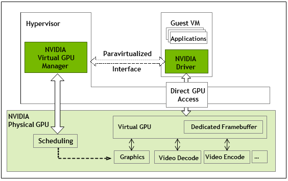
NVIDIA vGPU supports homogenous profiles for each GPU. The placement of virtual machines on a GPU is controlled by a policy that sets either maximum density or maximum performance in response to demand.
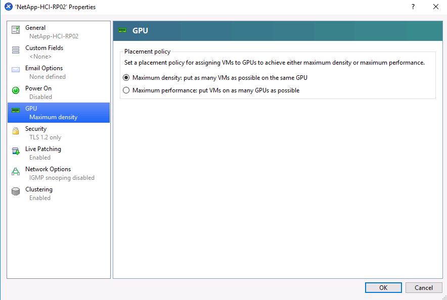
When creating a VM, you can set a virtual GPU profile. The vGPU profile you chose is based on the frame buffer memory level needed, the number of displays, and the resolution requirement. You can also set the purpose of a virtual machine, whether it be virtual apps (A), virtual desktops (B), a professional Quadro virtual workstation (Q), or compute workloads (C) for AI inferencing applications.
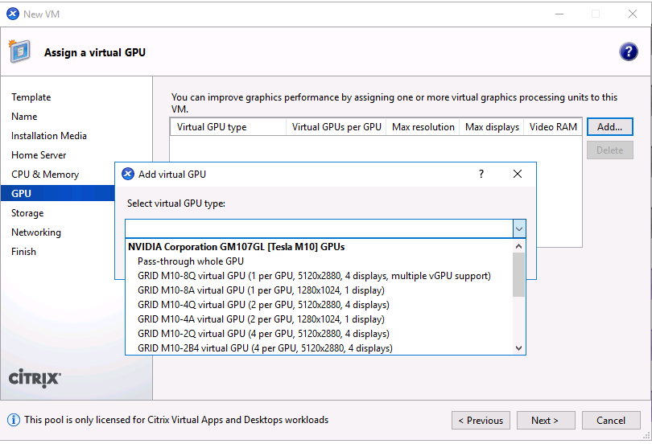
Independently from XenCenter, the CLI utility on the Citrix Hypervisor nvidia-smi can be used to troubleshoot and for monitoring the performance.
The NVIDIA driver on a virtual machine is required to access the virtual GPU. Typically, the hypervisor driver version and the VM guest driver should have the same vGPU release version. But, starting with vGPU release 10, the hypervisor can have the latest version while the VM driver can be the n-1 version.
Security
Citrix Hypervisor supports authentication, authorization, and audit controls. Authentication is controlled by local accounts as well as by Active Directory. Users and groups can be assigned to roles that control permission to resources. Events and logging can be stored remotely in addition to on the local server.
Citrix Hypervisor supports Transport Layer Security (TLS) 1.2 to encrypt the traffic using SSL certificates.
Because most configuration is stored locally in an XML database, some of the contents, like SMB passwords, are in clear text, so you must protect access to the hypervisor.
Data Protection
Virtual machines can be exported as OVA files, which can be used to import them to other hypervisors. Virtual machines can also be exported in the native XVA format and imported to any other Citrix Hypervisor. For disaster recovery, this second option is also available along with storage- based replication handled by SnapMirror or native Element OS synchronous or asynchronous replication. With NetApp, HCI storage can also be paired with ONTAP storage for replication.
Storage-based snapshot and cloning features are available to provide crash-consistent image backups. Hypervisor-based snapshots can be used to provide point-in-time snapshots and can also be used as templates to provision new virtual machines.
 Edit on GitHub
Edit on GitHub